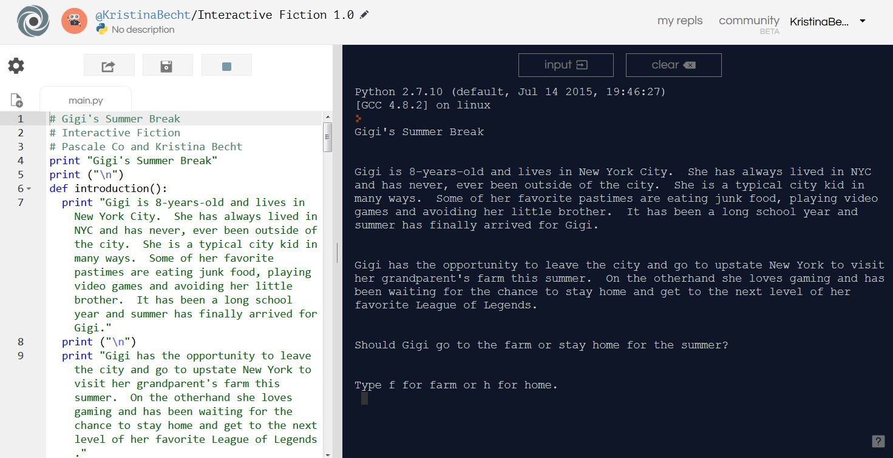

Here you can find a portfolio of the projects that I created during the PLTW training.
My first project was to make create this website from html.
For my second project, I created a project in the online program Scratch. My partner and I made a visual video to represent the story in the Pearl Jam song, "Last Kiss." The song is a trageic love song.
For my third project, my partner and I created an android application (an App), and our App was a game of Tic-Tac-Toe. We used the online program App Inventor for this project. This was a very challening task for us and our final product still have some glitches. However, we had internet issues that made programming and checking it very difficult.
My fourth project was to make create an interactive fiction story (aka choose-your-own-adventure story) using Python. This was our first interaction with Python and it was a great project for getting started. I really enjoyed my teacher's story - insert link.
Second Project


Third Project
Fourth Project
